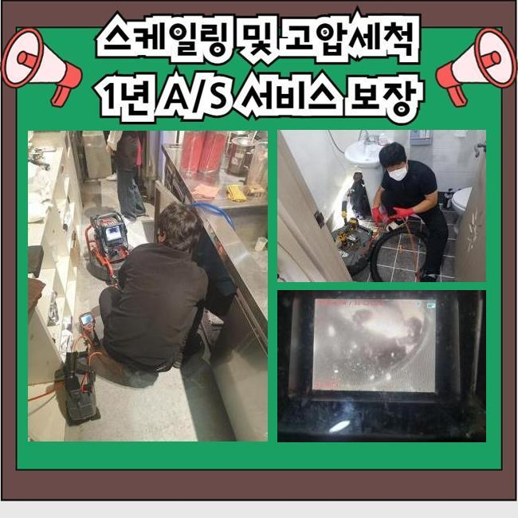
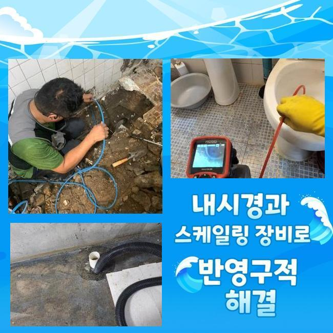
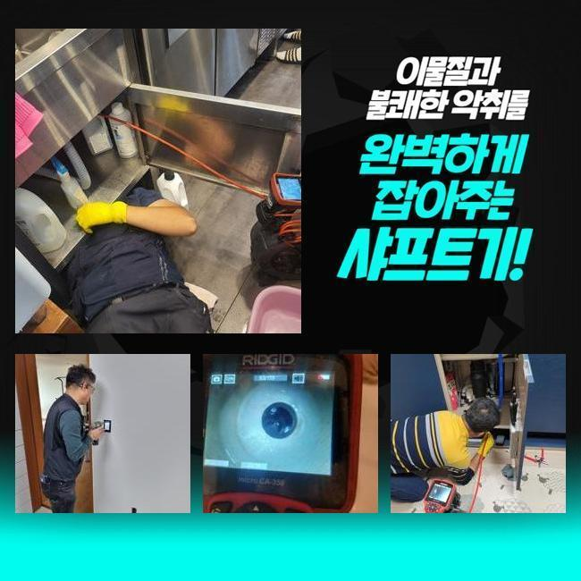
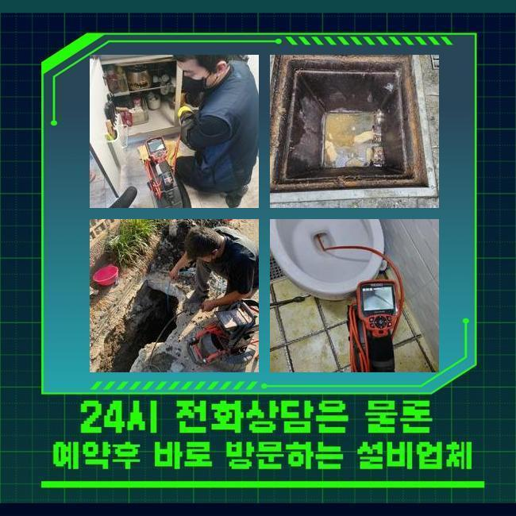
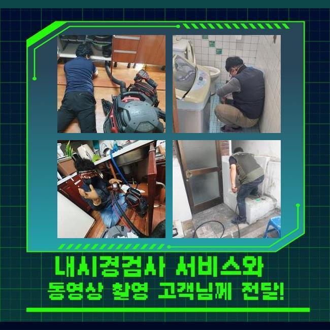
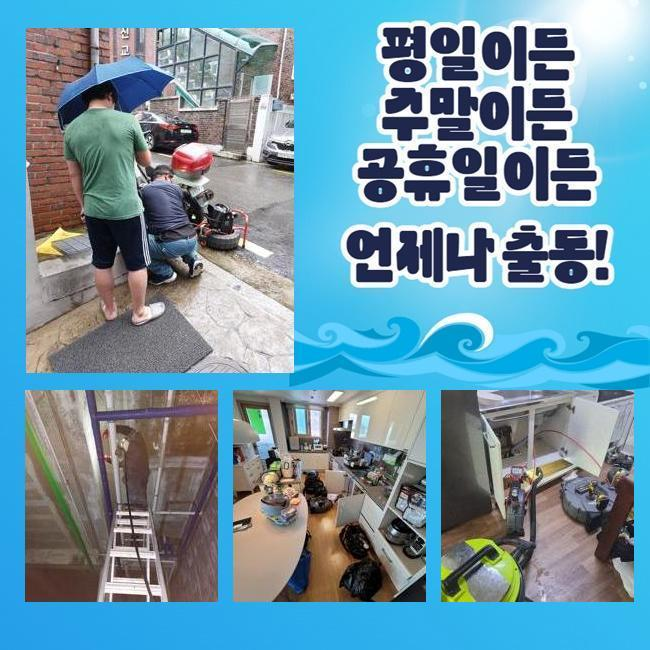
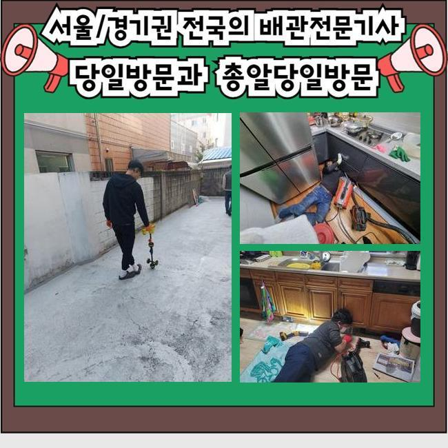

🏠 수원 파장동욕실역류 송죽동 하수구청소장비 배관막힘
용인시 처인구 배관막힘 전문 시공 후기

📋 작업 개요
- 위치: 용인시 처인구, 수원시 영통구, 화성시 동탄
- 서비스 유형: 배관막힘, 하수구청소, 고압세척, 내시경점검
- 작업 일시:
- 업체명: 하수구수사대 (010-5615-2118)
🔍 문제 상황
수원 파장동욕실역류 송죽동 하수구청소장비 배관막힘
3일전에 배수구 막힘으로 한 중식당에서 전화를 주셨는데요
설거지대와 바닥 쪽 하수관 전부 물이 순조롭게 내려가지 않으니 하수관세척을 해서 불편함을 없애고 싶다고 하셨어요
장소를 물어보고 내비게이션에 등록해 방문 예정 시간을 안내했어요
제가 위치한 지점에서부터 크게 멀지 않은 음식점이더라구요
고기집이나 식당의 경우 흔히 발생하는 기름 슬러지가 많아 배수구 세척을 규칙적으로 진행하는 곳도 있기 때문에 기기와 자재들을 준비한 후 곧바로 출발하였습니다
배수구 막힘으로 요청하신 음식점에 방문하여 조리공간으로 가보니 생각한것 보다 위태로운 상황이었어요

🔎 원인 분석
💡 전문가 진단: 정밀 진단 장비를 사용하여 슬러지의 고착 여부를 판명하고 타격/세척 작업을 실시했습니다.
심각하게 부패된 기름 슬러지가 솟구쳐서 요리실에서 불쾌한냄새가 풍기고 있었고 바닥면과 벽까지도 난장판이 되어있더라구요
고객께서는 설거지대 후면부에 감춰져 있는 배수관 결함으로 인해 하수가 빠르게 배수되지 않는다고 생각하셨을뿐 싱크볼을 이동시켜 눈으로 보지 않았기 때문에 위급한 상황임을 모르고 계셨어요
이 같은 경우 배수로 속안의 모습을 직접 파악하기 힘들어 더 발빠른 대응이 필요해요
배수관 속을 살펴보려 했지만 역행했던 부위에서는 내시경기구를 진입시킬 수 없어 타공하고 배관 속을 관찰하기 위해 하수파이프의 일부를 절단했습니다
이 같이 배수관의 모습을 바로 진단할 수 있었어요
배수관 속은 기름 덩어리로 넘칠정도였으며 안에 단단히 굳어져 내시경기계를 배치할 자리조차 없을 지경이었어요
이는 오일과 음식 잔여물이 장기간동안 하수관로에 퇴적되며 기름 찌꺼기를 형성한 결과입니다
하수관이 기름 슬러지로 막힘이 발생하면 물이 빠지는게 점차 느려지며 나쁜냄새와 물 솟구침을 초래하게 됩니다 그렇기 때문에 배수관을 철저하게 세정하여 사태를 해결하는 것이 필수입니다

🔧 작업 과정
이 수준이면 이때까지 가게 운영을 제대로 못 했을 것 같아 여쭤봤더니 역시나 이 구역은 전혀 이용하지 않으시고 계시다고 이야기 했어요
하수가 전혀 흘러가지 않아서 배관에 문저희팀이 있던 것은 알았지만 혼자서 여러번 시도해보신 후에 물빠짐이 전혀 안 되자 결국 시간도 부족하고 해서 그대로 무시해 버린 듯 하였습니다
안을 내시경기구를 지켜본 결과 역시 검게 변한 채 돌처럼 굳어진 오일 찌꺼기로 인해서 배수로가 꽉 채워진 상황이었고요 배관 속에 틈이 조금도 확인되지 않고 있었어요
이런 정도라면 배관을 유지하는 일이 어려울 것 같아 구멍을 뚫은 후 상태를 점검했었던 작업 구간은 하수파이프를 아예 새제품으로 교체해 드린 후 좌우 배관에는 물이 잘 통할 때까지 배수구세정을 해보는 방향으로 계획을 세웠어요
플렉스샤프트 기구를 가동하여 배수관 속을 막아 놓은 기름 찌꺼기를 깨부수는 동안 불순물이 엄청나게 배출되더라고요
한동안 실시한 이 후 드디어 물이 흐르는 것을 파악할 수 있었습니다 그간 빠지지 못하고 썩고 있던 물이 시원하게 흘러나왔습니다
배관 세정이 마무리되면 하수관 냄새나 역류문제도 제거될 수 있다고 전해드렸더니 매우 만족하셨습니다
불순물이 쏟아져 나오고 난 다음에도 쉬지 않고 배수관 이물질을 플렉스샤프트 장비를 동작시켰고 멈추지 않고 배출될 것만 같던 찌꺼기는 어느덧 수량이 감소했어요
좌우 배관 전부 막힘을 뚫고 난 다음 신규 배수관을 연결 작업을 위해 알맞은 길이로 정리해주는 과정을 실시했어요
타공작업을 했던 배수로를 정확히 다듬고 나서 빈틈없이 길이를 맞춰 배수로를 커팅해주었고요 꼭 맞게 조립해주는 과정에선 수평자를 써서 생활용수가 잘 배출될 수 있게 연결해야 하므로 굉장히 신중함이 요구되는 일입니다
예전 배수로와 같은 모양으로 연결한 다음 원래있던 배수로 안을 체크했는데 여유공간이 조금도 없는 상태로 매우 불편했던 당시의 문제를 연상하게 했습니다
작업장의 하수파이프 여건에 맞게 청소를 끝내드리고 또한 새 하수파이프 교체 시공까지 꼼꼼하게 제공하는 것은 웬만한 전문 지식으로는 쉽지 않은 일입니다


✅ 작업 완료
타공 작업 후 하수파이프 속 상태에 따라 플렉스 샤프트기로 배수로를 스케일링해 불순물을 완벽히 닦아내어 하수관세척을 끝낸 뒤 세척이 불가했던 부분의 경우 새로운 하수관으로 변경 작업하여 배수가 원활히 되는 것을 검사를 해본 후 모두 마무리해 드리게 되었습니다
오일 찌꺼기 문제 하수설비 및 하수구 막힘 문제 등은 사정에 맞춰 효과적인 방법을 지원할 수 있는 전문인력에게 부탁하셔서 만족스러운 결과 받아 보시기 바래요
하수관 문제시엔 저희 팀으로 즉시 전화를 주셔서 불편없이 해결하시길 권유드립니다




⚠️ 하수구 배관 막힘 예방 및 관리 가이드
- ✅ 머리카락, 비닐, 물티슈 등 물에 분해되지 않는 이물질은 절대 흘려보내지 마세요.
- ✅ 기름기 많은 식기는 설거지 전 키친타올로 먼저 기름때를 닦아내세요.
- ✅ 주기적으로 배수구에 뜨거운 물을 가득 부어주어 유지방 고착을 방지하세요.
- ✅ 작업 후 1년 이내 재발 시 무상 A/S 보증 서비스를 제공합니다.
💡 핵심 정리
- 확실한 장비 작업(내시경 점검 및 샤프트 스케일링)으로 원인을 뿌리 뽑습니다.
- 작업 후 1년 이내에 동일한 부위 재발 시 100% 무상 A/S 서비스를 보장합니다.
- 서울 · 경기 · 인천 전 지역에 24시간 언제든 긴급 출동할 수 있도록 항시 대기 중입니다.
❓ 자주 묻는 질문 (FAQ)
🚨 용인시 처인구 배관막힘 문제로 고민이신가요?
정확한 원인 진단과 확실한 시공으로 재발 없는 해결을 약속드립니다.
24시간 긴급 출동 | 서울 · 경기 · 인천 전지역 | 1년 내 재발 시 무상 A/S